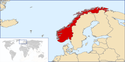

|  |
<<Натисніть щоб збільшити |
Особливості географічного положення |
Норвегія — європейська країна, що розташована на півночі континенту, на Скандинавському півострові . Загальна площа країни 323 802 км² (68-ме місце у світі), з яких на суходіл припадає 304 282 км², а на поверхню внутрішніх вод — 19 520 км². Площа країни вдвічі менша за площу України, трохи більша за площу штату Нью-Мексико. |
Сейсмічна активність |
Норвегія розташована в межах зони зі слабою сейсмічною активністю. За характером сейсмічності територія Норвегії відноситься до пасивних континентальних окраїн. Головну тектонічну роль відіграє Балтійський кристалічний щит, що має блокову будову і який охоплює велику площу Скандинавського і Кольського півостровів, Фінляндію і Карелію. Він протистоїть руху літосферних плит на північ у результаті субдукції Африканської плити під Європейську. По краях щита численні розломи, з якими пов'язані мілкофокусні землетруси. Епіцентри яких утворюють сейсмічний пояс уздовж північних берегів Скандинавського півострова. Землетруси пов'язані з розломами, що розсікають каледонські складчасті структури норвезького узбережжя. На південній околиці щита землетруси приурочені до розломів западин Данських проток і півострова Ютландія. Більшість сейсмічних вогнищ пов'язано із зонами новітніх диференційованих брилових рухів вздовж розломів, що утворили грабени типу Осло-фіорду і що характеризуються нечастими 7-бальними землетрусами. Значні землетруси Норвегії: 1)Харстад, 28 квітня 1974 року, магнітуда 4,2, глибина вогнища 33 км. 2)Буде, 15 грудня 1962 року, інтенсивність 5,5 бала, магнітуда 4,8. 3)Гамар, 18 жовтня 1962 року, інтенсивність 5,5 бала, магнітуда 4,7. |
|
Рельєф |
Норвегія — країна мальовничих ландшафтів, із зубчатими гірськими хребтами, долинами, обробленими льодовиками, і вузькими фіордами з крутими берегами. Середні висоти — 460 м; найнижча точка — рівень вод Норвезького моря (0 м); найвища точка — гора Гальгепігген (2469 м). Понад 70 % території країни займають Скандинавські гори, які простягаються з південного-заходу на північний-схід на 1700 км. Середні висоти 1600—1900 м; максимальна 2469 м — гора Гальхьопіґґен. Низини займають вузьку (40-50 км) приморську смугу — странфлат. Вершини плоскогір'їв пенепленізовани — ф'єльди. На півдні розташоване велике нагір'я. З останніми різко контрастують круті схили Скандинавських гір. |
| <<Норвегія |
| <<Визначні місця |